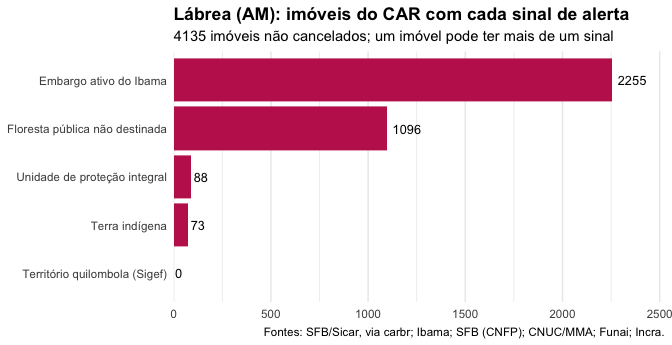
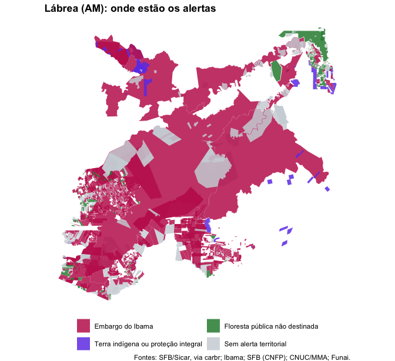
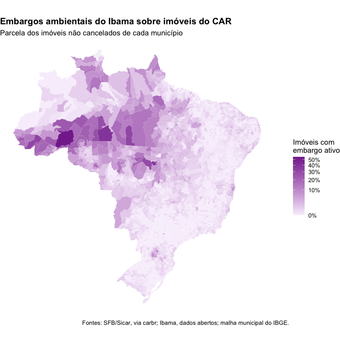
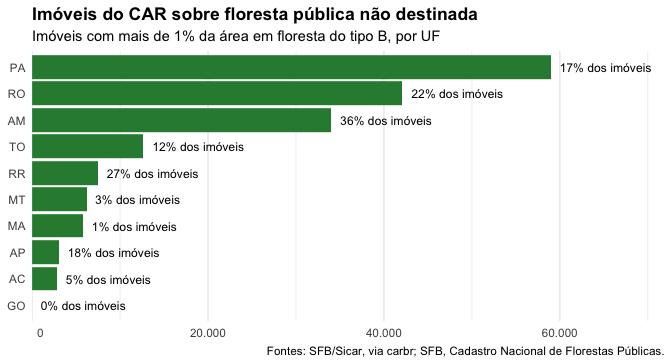

Antes de conceder crédito rural, o banco confere se o imóvel tem algum dos impedimentos sociais, ambientais e climáticos que o Manual de Crédito Rural lista (capítulo 2, seção 9). Vários deles são perguntas de mapa: o imóvel está sobre terra indígena? Sobre unidade de conservação? Tem embargo ambiental? Está em floresta pública que ainda não foi destinada?
O dono do imóvel faz essa conferência no Meu Imóvel Rural, um imóvel
por vez. Este guia mostra como fazê-la em lote, para
uma carteira ou para um município inteiro, com car_check()
e car_quality().
Uma lista de imóveis de uma vez
car_check() recebe os códigos e devolve, para cada um, o
que consta na camada pública e um resultado: "ok",
"attention", "blocked",
"not_found" ou "invalid". A nota diz o motivo
em português.
labrea <- car_properties("AM", municipality = "Lábrea", geometry = FALSE)
nrow(labrea)
#> [1] 4550
check <- car_check(labrea$property_code)
count(check, check)
#> # A tibble: 3 × 2
#> check n
#> <chr> <int>
#> 1 attention 2267
#> 2 blocked 1784
#> 3 ok 499
check |>
filter(check == "attention") |>
select(note) |>
head(4)
#> # A tibble: 4 × 1
#> note
#> <chr>
#> 1 Analisado, com notificação sem resposta do declarante.
#> 2 Analisado, com notificação sem resposta do declarante.
#> 3 Analisado, com notificação sem resposta do declarante.
#> 4 Analisado, com notificação sem resposta do declarante.Lábrea, no sul do Amazonas, foi escolhido de propósito: é um dos municípios com mais embargos do país. Os 4550 cadastros levam poucos segundos, porque a consulta lê só os blocos do município.
O que pesa em cada caso
A classificação junta vários sinais. car_quality() traz
cada um em separado, por imóvel:
quality <- car_quality("AM", municipality = "Lábrea")
signals <- tibble::tibble(
signal = c(
"Embargo ativo do Ibama", "Floresta pública não destinada",
"Unidade de proteção integral", "Terra indígena",
"Território quilombola (Sigef)"
),
properties = c(
sum(quality$embargo_count > 0),
sum(quality$public_forest_share >= 0.01),
sum(quality$strict_protection_share >= 0.01),
sum(quality$indigenous_share >= 0.01),
sum(quality$quilombola_share >= 0.01)
)
)
ggplot(signals, aes(properties, reorder(signal, properties))) +
geom_col(fill = "#c2255c") +
geom_text(aes(label = properties), hjust = -0.2, size = 3.4) +
scale_x_continuous(expand = expansion(mult = c(0, 0.12))) +
labs(
title = "Lábrea (AM): imóveis do CAR com cada sinal de alerta",
subtitle = paste(nrow(quality), "imóveis não cancelados; um imóvel pode ter mais de um sinal"),
x = NULL, y = NULL, caption = "Fontes: SFB/Sicar, via carbr; Ibama; SFB (CNFP); CNUC/MMA; Funai; Incra."
) +
theme_minimal() +
theme(plot.title = element_text(face = "bold"), panel.grid.major.y = element_blank())
plot of chunk motivos
No mapa, os mesmos sinais mostram onde o problema está dentro do município:
shapes <- car_properties("AM", municipality = "Lábrea") |>
filter(status != "cancelled") |>
left_join(quality, by = "property_code") |>
mutate(signal = case_when(
embargo_count > 0 ~ "Embargo do Ibama",
indigenous_share >= 0.01 | strict_protection_share >= 0.01 ~ "Terra indígena ou proteção integral",
public_forest_share >= 0.01 ~ "Floresta pública não destinada",
TRUE ~ "Sem alerta territorial"
)) |>
mutate(signal = factor(signal, c(
"Embargo do Ibama", "Terra indígena ou proteção integral",
"Floresta pública não destinada", "Sem alerta territorial"
)))
ggplot(shapes) +
geom_sf(aes(fill = signal), colour = NA, alpha = 0.85) +
scale_fill_manual(
values = c("#c2255c", "#7048e8", "#2b8a3e", "#ced4da"), name = NULL, drop = FALSE
) +
labs(
title = "Lábrea (AM): onde estão os alertas",
caption = "Fontes: SFB/Sicar, via carbr; Ibama; SFB (CNFP); CNUC/MMA; Funai."
) +
guides(fill = guide_legend(ncol = 2)) +
theme_void() +
theme(legend.position = "bottom", plot.title = element_text(face = "bold"))
plot of chunk labrea
O país inteiro, por município
car_quality_summary() traz as contagens por município,
prontas. Os totais:
towns <- car_quality_summary()
towns |>
summarise(
properties = sum(properties), embargoed = sum(embargoed),
public_forest = sum(public_forest), strict_protection = sum(strict_protection),
indigenous = sum(indigenous), quilombola = sum(quilombola)
) |>
as.data.frame()
#> properties embargoed public_forest strict_protection indigenous quilombola
#> 1 8405796 68972 173046 67009 13528 2693Os embargos se concentram no arco do desmatamento:
brazil <- sf::read_sf(paste0(
"https://servicodados.ibge.gov.br/api/v3/malhas/paises/BR?intrarregiao=municipio",
"&formato=application/vnd.geo%2Bjson&qualidade=minima"
)) |>
mutate(municipality_code = as.integer(codarea)) |>
left_join(towns, by = "municipality_code") |>
mutate(share = 100 * embargoed / properties)
ggplot(brazil) +
geom_sf(aes(fill = share), colour = NA) +
scale_fill_gradient(
low = "#f8f0fc", high = "#862e9c", na.value = "#f1f3f5", trans = "sqrt",
labels = function(x) paste0(round(x), "%"), name = "Imóveis com\nembargo ativo"
) +
labs(
title = "Embargos ambientais do Ibama sobre imóveis do CAR",
subtitle = "Parcela dos imóveis não cancelados de cada município",
caption = "Fontes: SFB/Sicar, via carbr; Ibama, dados abertos; malha municipal do IBGE."
) +
theme_void() +
theme(plot.title = element_text(face = "bold"))
plot of chunk embargos
towns |>
arrange(desc(embargoed)) |>
mutate(share = round(100 * embargoed / properties, 1)) |>
select(state, municipality, properties, embargoed, share)
#> # A tibble: 5,563 × 5
#> state municipality properties embargoed share
#> <chr> <chr> <int> <int> <dbl>
#> 1 RO Porto Velho 23819 4970 20.9
#> 2 AM Lábrea 4135 2255 54.5
#> 3 AC Feijó 5209 1661 31.9
#> 4 RO Nova Mamoré 7038 1204 17.1
#> 5 AM Boca do Acre 4984 1099 22.1
#> 6 PA São Félix do Xingu 9415 1084 11.5
#> # ℹ 5,557 more rowsAs florestas públicas não destinadas, as do “tipo B” do Cadastro Nacional de Florestas Públicas, são um fenômeno da Amazônia:
towns |>
group_by(state) |>
summarise(public_forest = sum(public_forest), properties = sum(properties)) |>
filter(public_forest > 0) |>
mutate(share = 100 * public_forest / properties) |>
ggplot(aes(public_forest, reorder(state, public_forest))) +
geom_col(fill = "#2b8a3e") +
geom_text(aes(label = paste0(round(share), "% dos imóveis")), hjust = -0.1, size = 3.2) +
scale_x_continuous(
labels = function(x) format(x, big.mark = ".", decimal.mark = ","),
expand = expansion(mult = c(0, 0.22))
) +
labs(
title = "Imóveis do CAR sobre floresta pública não destinada",
subtitle = "Imóveis com mais de 1% da área em floresta do tipo B, por UF",
x = NULL, y = NULL, caption = "Fontes: SFB/Sicar, via carbr; SFB, Cadastro Nacional de Florestas Públicas."
) +
theme_minimal() +
theme(plot.title = element_text(face = "bold"), panel.grid.major.y = element_blank())
plot of chunk florestas
O que a triagem cobre, e o que não cobre
Dos oito impedimentos do manual, cinco estão cobertos por inteiro: a situação do CAR, as terras indígenas (Funai), as unidades de conservação (CNUC/MMA), os embargos (Ibama) e as florestas públicas não destinadas (SFB).
Os territórios quilombolas entram em parte. O Incra retirou do ar em 2026 a camada completa, e o que usamos são os territórios já georreferenciados no Sigef. Um alerta de território quilombola é confiável; a falta dele não garante que o imóvel esteja fora de um.
Ficam de fora a supressão de vegetação nativa, que depende de autorizações sem cadastro público único, e o trabalho análogo à escravidão, que é uma lista de pessoas: esta base não tem dado pessoal.
Dois cuidados ao usar o resultado:
- os embargos são só os do Ibama; órgãos estaduais e o ICMBio também embargam;
- tudo parte de perímetros autodeclarados. O resultado é um sinal para a análise, não uma conclusão sobre o imóvel, e não substitui a consulta oficial.